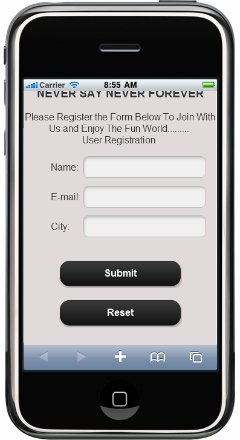
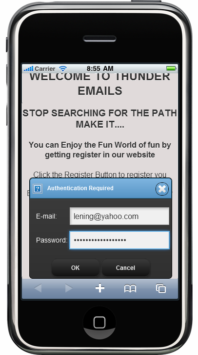

The form button can be used in any kind of registration form and authentication pages.
For example:
1. Submit Button—Used to submit the form values for some process like registration or railway ticket reservation, etc.
2. Reset Button—Used when the user wants to reset to the default values in the form in case they entered incorrect information.
3. Button—Used to go to the next page after giving the proper authentication.
Examples of this form button are shown in screenshots as follows:

Figure 3: Form Button in Registration Form

Figure 210: Form Button in Authentication Form